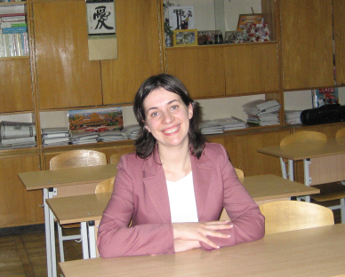

Варвара Михайловна Смелкова (Подтакуй)
Преподаватель китайского языка высшей категории. Обучалась в гимназии с первого класса и окончила её с золотой медалью. Выпускник Санкт-Петербургского Государственного Университета с отличием. Кандидат психологических наук. Неоднократно стажировалась в Китае. Работает в гимназии с 2000 года.
Проводит обучение китайскому языку в младшей, средней и старшей школе, а также факультативы по нескольким темам. Подготовила победителей и призёров конкурсов: «Китайский мост», «Конкурс песни на китайском языке», «Конкурс юных экскурсоводов школьных музеев (экскурсии на иностранных языках)», региональная олимпиада по китайскому языку.
Автор методических разработок к урокам для 2-11 классов. Лауреат районного конкурса «Учитель года 2011».
Область интересов лежит на стыке дисциплин, например, влияние изучения иностранного языка на становление интеллектуального потенциала подростков, и другие темы, связанные с развитием ребёнка.
К образовательному процессу подходит творчески.
Девиз: «Учись с улыбкой!»
Домашняя страничка: http://navytux.spb.ru/~yarava/